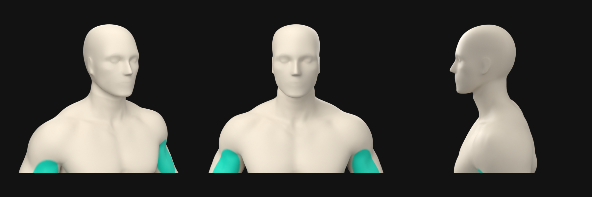
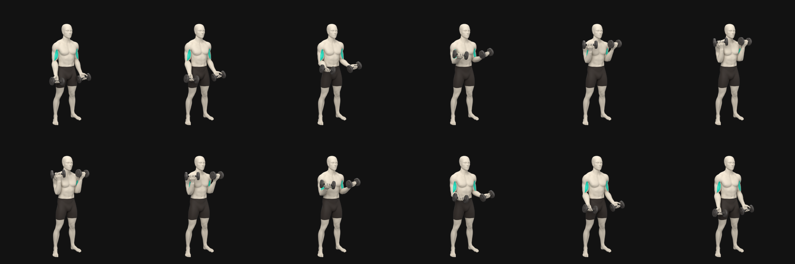

Standing Dumbbell Curl
Sandstone mannequin. Transparent loop (render.webm) on three backgrounds, then the head close-ups.
Head

Contact sheet

Sandstone mannequin. Transparent loop (render.webm) on three backgrounds, then the head close-ups.

